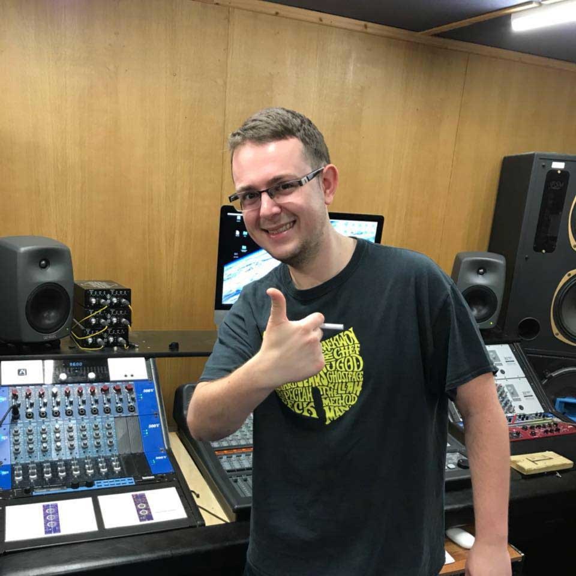

Just me.
DEMOTAPEZ
My passion is 1990’s Hip-Hop and my biggest inspirations were artists such as Pete Rock, Lord Finesse, Diamond D, Buckwild. Started producing beats with my computer and FL Studio, studying sound engineering and learning about analog equipment used during 90s era. From beginning, I was producing beats and mixing for Lithuanian underground Hip-Hop artists. This helped me out a lot in learning about techniques of recording, using compressors and equalizers and mastering basics.